건축기사 (2010-03-07 기출문제)
1과목: 건축계획
1. 은행의 주출입구(방풍실부)로서 가장 적합한 것은?
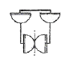
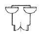
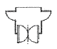
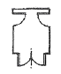
(정답률: 69%)

2. 미술관의 연속순로 형식에 대한 설명 중 옳은 것은?
- 많은 실을 순서별로 통하여야 하는 불편이 있으나 공간절약의 이점이 있다.
- 중심부에 하나의 큰 홀을 두고 그 주위에 각 전시실을 배치하여 자유로이 출입하는 형식이다.
- 평면적인 형식으로 2, 3개 층의 입체적인 방법은 불가능하다.
- 각 실을 필요시에는 자유로이 독립적으로 폐쇄할 수 있다.
(정답률: 79%)
3. 사무소 건축의 실단위 계획에 대한 설명 중 옳지 않은 것은?
- 개실 시스템은 독립성과 쾌적감의 이점이 있다.
- 개실 시스템은 연속된 긴 복도의 인해 방깊이에 변화를 주기가 용이하다.
- 개방식 배치는 개실 시스템보다 공사비가 저렴하다.
- 개방식 배치는 전면적을 유용하게 이용할 수 있다.
(정답률: 77%)
4. 사무소 건축에서 엘리베이터 대수 산정시 기준이 되는 것은?
- 출근시간대의 수송인원
- 퇴근시간대의 수송인원
- 점심시간 직전의 수송인원
- 점심시간 직후의 수송인원
(정답률: 87%)
5. 다음 중 캐빈 린치(Kevin Lynch)가 주장한 “도시이미지”의 구성요소가 아닌 것은?
- Paths
- Edges
- Linkages
- Landmarks
(정답률: 80%)
6. 백화점의 진열장 배치에 대한 설명 중 옳지 않은 것은?
- 직각배치 방식은 판매장 면적이 최대한으로 이용되고 간단하다.
- 사행배치는 주통로 이외의 제2통로를 상하교통계를 향해서 45° 사선으로 배치한 것이다.
- 사행배치는 많은 고객이 판매장 구석까지 가기 쉬운 이점이 있으나 이형의 진열장이 필요하다.
- 자유유선 배치방식은 획일성을 탈피할 수 있으며 변화와 개성을 추구할 수 있고 시설비가 적게 든다.
(정답률: 79%)
7. 2층 단독주택에서 1층에 부모가, 2층에 자녀들이 거주할 경우에 가족의 단한에 가장 영향을 줄 수 있는 요소는?
- 계단의 배치
- 침실의 방위
- 건물의 층고
- 식당과 부엌의 연결방법
(정답률: 85%)
8. 다음 중 공공 도서관에서 능률적인 작업용량을 고려할 경우, 200000권의 책을 수장하는 서고의 바닥면적으로 가장 적당한 것은?
- 1000 m2
- 600 m2
- 500 m2
- 400 m2
(정답률: 83%)
9. 쇼핑센터의 공간구성에서 페디스트리언 지대(Pedestrian area)의 일부로서 고객을 각 상점에 유도하는 주요 보행자 동선인 동시에 고객의 휴식처로서 기증을 갖고 있는 곳은?
- 몰(Mall)
- 코트(Court)
- 핵상점(Magnet store)
- 허브(Hub)
(정답률: 83%)
10. 극장의 평면형 중 프로시니엄형에 대한 설명으로 옳지 않은 것은?
- 강연, 콘서트, 독주, 연극공연 등에 적합하다.
- 연기자가 일정한 방향으로만 관객을 대하게 된다.
- 무대의 배경을 만들지 않으므로 경제성이 있다
- Picture frame stage라고도 불린다.
(정답률: 83%)
11. 다음 중 극장건축과 관계가 없는 것은?
- 그린 룸(green room)
- 사이클로라마(cyclorama)
- 플라이 갤러리(fly gallery)
- 캐럴(carrel)
(정답률: 81%)
12. 공장건축에 관한 설명 중 옳은 것은?
- 자연환기장식의 경우 환기방법은 채광형식과 관련하여 건물형태를 결정하는 매우 중요한 요소가 된다.
- 재료반입과 제품반출 동선은 동일하게 하고 물품동선과 사람동선은 별도로 하는 것이 바람직하다.
- 외부인 동선과 작업원 동선은 동일하게 하고, 견학자는 생산과 교차하지 않는 동선을 확보하도록 한다.
- 계획시부터 장래증축을 고려하는 것이 필요하며 평면형은 가능한 요철이 많은 것이 유리하다.
(정답률: 72%)
13. 호텔의 건축계획에 관한 설명 중 옳지 않은 것은?
- 주식당(main dining room)은 숙박객 및 외래객을 대상으로 하며 외래객이 편리하게 이용할 수 있도록 출입구를 별도로 설치한다.
- 기준층의 객실수는 기준층의 면적이나 기둥간격의 구조적인 문제에 영향을 받는다.
- 로비는 퍼블릭 스페이스의 중심으로 휴식, 면회, 담화, 독서 등 다목적으로 사용되는 공간이다.
- 객실의 크기는 대지나 건물의 형태에 영향을 받지 않는다.
(정답률: 80%)
14. 초등학교 건축의 교실환경계획에 관한 설명 중 옳지 않은 것은?
- 교실의 색채는 저학년의 경우 난색계통, 고학년은 대체로 사고력의 증진을 위해 중성색이나 한색계통의 배색이 좋다.
- 일반적으로 교실채광은 칠판을 향해 좌측채광을 원칙으로 한다.
- 교실 채광은 일조시간이 긴 방위를 택하고 1방향 채광일 때는 깊은 곳까지 고른 조도가 얻어질 수 있도록 한다.
- 책상 면의 조도는 교실의 칠판 면의 조도보다 더 밝아야 한다.
(정답률: 75%)
15. 건축물의 방재계획 내용으로 옳지 않은 것은?
- 재난 발생시에 대비하여 일정시간 안전한 건축공간을 확보하여야 한다.
- 재난 시 안전히 피할 수 있는 통로와 설비를 확보하여야 한다.
- 소화나 구출 활동이 신속히 펼쳐질 수 있는 설비를 확보하여야 한다.
- 신속한 대피를 위하여 각 층에서 한 방향으로만의 피난 통로를 확보하여야 한다.
(정답률: 84%)
16. 르네상스 시대의 건축가에 해당되지 않는 사람은?
- 비트루비우스
- 브루넬레스키
- 미켈란젤로
- 알베르티
(정답률: 53%)
17. 아파트의 평면형식에 대한 설명 중 옳지 않은 것은?
- 홀형은 계단 또는 엘리베이터 홀로부터 직접 주거 단위로 들어가는 형식이다.
- 홀형은 통행부 면적이 작아서 건물의 이용도가 높다.
- 집중형은 채광ㆍ통풍 조건이 좋아 기계적 환경조절이 필요하지 않다.
- 중복도형은 대지에 대해서 건물 이용도가 높으나, 프라이버시가 좋지 않다.
(정답률: 79%)
18. 아파트의 단면형식 중 메조넷형(maisonette type)에 대한 설명으로 옳지 않은 것은?
- 주택 내부공간의 다양한 변화추구가 가능하다.
- 공용 및 서비스 면적이 증가한다.
- 통로가 없는 층의 평면은 일조, 통풍 및 전망이 좋다.
- 거주성, 특히 프라이버시의 확보가 용이하다.
(정답률: 69%)
19. 공장건축의 레이아웃(layout)에 대한 설명 중 옳지 않은 것은?
- 고정식 레이아웃은 기능이 동일하거나 유사한 공정, 기계를 접합하여 배치하는 방식이다.
- 레이아웃은 장래 공장규모의 변화에 대응한 융통성이 있어야 한다.
- 제품중심의 레이아웃은 대량생산에 유리하며 생산성이 높다.
- 표준화가 어려운 경우에 적합한 형식은 공정중심의 레이아웃이다.
(정답률: 64%)
20. 종합병원의 건축계획에 대한 설명 중 옳지 않은 것은?
- 부속진료부는 외래환자 및 입원환자 모두가 이용하는 곳이다.
- 집중식 병원건축에서 부속진료부외 외래부는 주로 건물의 저층부에 구성된다.
- 간호사 대기소는 각 간호단위 또는 각층 및 동별로 설치한다.
- 외래진료부의 운영방식에 있어서 미국의 경우는 대게 클로즈드 시스템인데 비하여, 우리나라는 오픈 시스템이다.
(정답률: 82%)
2과목: 건축시공
21. 다음 중 녹막이 칠에 부적합한 도료는?
- 광명단
- 크레오소트유
- 아연분말 도료
- 역청질 도료
(정답률: 71%)
22. 개량아스팔트 시트 방수공사 중 최상층에 노출용의 개량아스팔트 시트를 사용하여 전면 밀착으로 하는 공법을 나타내는 기호는?
- M-PrF
- M-MiF
- M-MiT
- M-RuF
(정답률: 58%)
23. 가이데릭(Guy derick)에 대한 설명 중 옳지 않은 것은?
- 기계대수는 평면높이의 가동범위ㆍ조립능력과 공기에 따라 결정한다.
- 붐(boom)의 길이는 마스트의 길이보다 길다.
- 볼 휠(ball wheel)은 가이데릭 하단부에 위치한다.
- 붐(boom)의 회전각은 360° 이다.
(정답률: 71%)
24. 다음 중 공사수행방식에 따른 계약에 해당되지 않는 것은?
- 설계ㆍ시공 분리계약
- 단가도급계약
- 설계ㆍ시공 일괄계약
- 턴키계약
(정답률: 72%)
25. 문 윗틀과 문짝에 설치하여 문이 자동적으로 닫혀지게 하며, 개폐속도를 조절할 수 있는 장치는?
- 도어 체크(Door check)
- 도어 홀더(Door holder)
- 피봇 힌지(Pivot hinge)
- 도어 체인(Door chain)
(정답률: 77%)
26. 철근콘크리트공사에서 콘크리트 이어치기에 대한 설명으로 옳지 않은 것은?
- 콘크리트의 이어치기는 원칙적으로 응력이 집중되는 곳에서 한다.
- 보는 스팬의 중앙 또는 단부의 1/4 부분에서 이어친다.
- 기둥ㆍ기초는 슬래브의 상단에서 이어친다.
- 캔틸레버 보는 이어치기를 하지 않고 한번에 타설한다.
(정답률: 73%)
27. 표준형 벽돌을 사용하여 줄눈 10mm로 시공할 때 2.0B 벽돌벽의 두께는? (단, 공간쌓기 아님)
- 210mm
- 390mm
- 320mm
- 430mm
(정답률: 64%)
28. 건축 석재에서 석영, 장석 및 운모로 이루어 졌으며 통상적으로 강도가 크고, 내구성이 커서, 내ㆍ외부 벽체, 기둥 등에 다양하게 사용되는 석재는?
- 화강암
- 석회암
- 대리석
- 점판암
(정답률: 64%)
29. 미장 공사에서 균열을 방지하기 위하여 고려해야 할 사항 중 옳지 않은 것은?
- 바름면은 바람 또는 직사광선 등에 의한 급속한 건조를 피한다.
- 1회의 바름 두께는 가급적 얇게 한다.
- 쇠 흙손질을 충분히 한다.
- 모르타르 바름의 정벌바름은 초벌바름보다 부배합으로 한다.
(정답률: 73%)
30. 연약점토의 점착력을 판정하기 위한 지반조사 방법으로 가장 알맞은 것은?
- 표준관입시험
- 베인테스트
- 샘플링
- 탄성파탐사법
(정답률: 73%)
31. 다음 중 벽돌공사에 대한 설명으로 옳지 않은 것은?
- 치장줄눈의 줄눈파기 깊이는 15mm 정도로 한다.
- 쌓기용 모르타르의 강도는 벽돌강도와 동등하거나 그 이상으로 한다.
- 하루에 쌓는 높이는 1.2m~1.5m를 표준으로 한다.
- 모르타르에 사용되는 모래는 제염된 것을 사용한다.
(정답률: 63%)
32. 토공사 적산에 대한 설명 중 옳지 않은 것은?
- 흙막이가 있는 경우 터파기 깊이가 5m 이하일 때 터파기 여유폭은 60~90cm 를 표준으로 한다.
- 흙막이가 없는 경우 터파기 깊이가 4m 이하일 때 터파기 여유폭은 50cm 를 표준으로 한다.
- 깊이 3m 미만의 터파기는 휴식각을 고려하지 않는 수직 터파기량으로 산출한다.
- 잔토처리시 흙파기량을 전부 잔토처리할 때의 잔토처리량은 (흙파기체적)×(토량환산계수)로 한다.
(정답률: 63%)
33. 슬라이딩 폼(Sliding form)에서 거푸집을 일정한 속도로 계속 끌어올리는 장치의 명칭은?
- 요오크(York)
- 메탈(Metal)
- 유로(Euro)
- 워플(Waffle)
(정답률: 66%)
34. 보통 철골구조인 경우 철골 1ton당 도장면적은?(오류 신고가 접수된 문제입니다. 반드시 정답과 해설을 확인하시기 바랍니다.)
- 20~33m2
- 33~50m2
- 50~65m2
- 65~72m2
(정답률: 65%)
35. 수밀콘크리트 시공에 대한 설명 중 옳지 않은 것은?(관련 규정 개정전 문제로 여기서는 기존 정답인 1번을 누르면 정답 처리됩니다. 자세한 내용은 해설을 참고하세요.)
- 불가피하게 이어치기 할 경우 이어치기 면의 레이턴스를 제거하고 빈배합 콘크리트를 사용한다.
- 콘크리트의 표면마감은 진공처리방법을 사용하는 것이 좋다.
- 타설이 완료된 콘크리트면은 즉시 습윤상태로 유지하고, 2주 이상 장기간 물에 접하게 하여 건조하지 않게 한다.
- 부어넣는 콘크리트 온도는 30℃ 이하로 하고 진동기 사용을 원칙으로 한다.
(정답률: 66%)
36. 화살선형 Net Work의 화살표에 대한 설명 중 옳지 않은 것은?
- 화살표 밑에는 계획작업 일수를 숫자로 기재한다.
- 더미(dummy)는 화살점선으로 표시한다.
- 화살표 위에는 결합점 번호를 기재한다.
- 화살표의 길이는 특정한 의미가 없다.
(정답률: 72%)
37. 다음 중 도료의 원료로 사용되는 천연수지가 아닌 것은?
- 로진(rosin)
- 셀락(shellac)
- 코펄(copal)
- 알키드 수지(alkyd resin)
(정답률: 73%)
38. 용접 작업 시 용착급속 단면에 생기는 작은 은색의 점으로 수소의 영향에 의해서 발생하며 100℃로 가열하여 24시간 방치하면 수소가 방출되어 회복되는 불완전용접의 종류는?
- 피시 아이(fish eye)
- 블로 홀(blow hall)
- 슬래그 섞임(slag inclusion)
- 크레이터(crater)
(정답률: 74%)
39. 시공기계에 관한 설명 중 옳지 않은 것은?
- 타워크레인은 골조공사의 거푸집, 철근 양중에 주로 사용된다.
- 파워셔블은 위치한 지면보다 높은 곳의 굴착에 적합하다.
- 스크레이퍼는 굴착, 적재, 운반, 정지 등의 작업을 연속적으로 할 수 있는 중ㆍ장거리용 토공기계이다.
- 바이브레이팅 롤러(Vibrating roller)는 콘크리트 다지기에 사용된다.
(정답률: 68%)
40. 다음 중 수량산출시 할증률이 가장 큰 것은?
- 이형철근
- 자기타일
- 붉은벽돌
- 단열재cm2,
(정답률: 73%)
3과목: 건축구조
41. 그림과 같은 압축재에 V-V 축의 세장비 값으로 옳은 것은? (단, A=10cm2, Iv=36cm4)
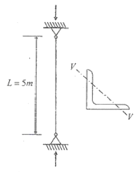
- 270.3
- 263.1
- 254.8
- 236.4
(정답률: 56%)
42. 지지하중이 작용하는 철근콘크리트 부재의 설계에 관한 상세규정으로 옳지 않은 것은?
- 축방향철근-접합면에서 정모멘트에 대한 강도는 부모멘트에 대한 강도의 2/3 이상이어야 한다.
- 횡방향철근-첫 번째 후프철근은 지지부재의 면으로 부터 50mm 이내에 위치하여야 한다.
- 횡방향철근-후프철근이 필요하지 않은 곳에서는 부재의 전 길이에 걸쳐서 d/2 이내의 간격으로 양단 내진갈고리를 갖춘 스터럽을 배치하여야 한다.
- 횡방향철근-후프철근의 최대간격은 d/4, 축방향철근의 최소 지름의 8배, 후프철근지름의 24배, 300mm 중 가장 작은 값을 초과하지 않아야 한다.
(정답률: 31%)
43. 다음 그림의 단순보에서 AC부재의 전단력은?
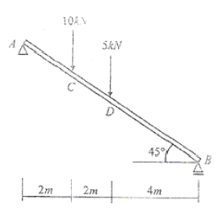
- 5.2 kN
- 7.1 kN
- 10.6 kN
- 15 kN
(정답률: 50%)
44. 강도설계법에서 흙에 접하는 기둥의 최소 피복두께 기준으로 옳은 것은? (단, 현장치기 콘크리트로서 D25인 철근임)
- 20mm
- 30mm
- 40mm
- 50mm
(정답률: 52%)
45. 그림과 같은 단순보의 중앙에 집중하중 P가 1개 작용할 때, 지점에 생기는 처짐각은?
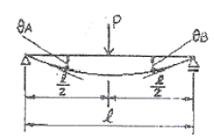
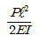
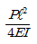
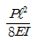
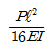
(정답률: 52%)
46. 그림은 강도설계법에서 단근 직사각형보의 응력도를 나타낸 것이다. 응력중심간 거리(d - a/2)로 옳은 것은? (단, fck=21MPa, fy=300MPa, b=300mm, d=540mm, As=1161mm2)
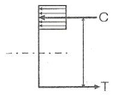
- 507.5mm
- 524.4mm
- 486.8mm
- 472.4mm
(정답률: 53%)
47. 2경간 연속보에서 반력 Rc의 크기는? (단, F, I는 일정함)
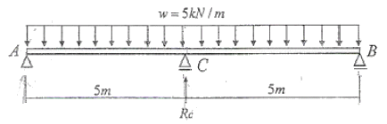
- 31.25 kN
- 25 kN
- 18.75 kN
- 11.25 kN
(정답률: 36%)
48. 토질 및 지반에 관한 설명 중 옳지 않은 것은?
- 자갈층ㆍ모래층은 투수성이 큰 편이지만 젖은 점토층은 투수성이 작다.
- 점토와 모래의 중간 크기를 갖는 흙을 실트라 한다.
- 지진시 액상화 현상은 모래질 지반보다 점토질 지반에서 일어나기 쉽다.
- 점토질 지반에서 흙의 내부마찰각이 같은 경우 점착력이 클수록 옹벽에 가해지는 토압은 작아진다.
(정답률: 56%)
49. 강구조 고력볼트 마찰접합의 특징에 관한 설명 중 옳지 않은 것은?
- 시공이 용이하여 공기가 절약된다.
- 접합부의 강성과 강도가 크다.
- 불량개소의 수정이 용이하다.
- 사용강재가 절약된다.
(정답률: 50%)
50. 다음 구조물의 부정정 차수는?
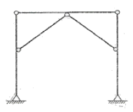
- 1차 부정정
- 2차 부정정
- 3차 부정정
- 4차 부정정
(정답률: 50%)
51. 고층건물의 구조형식 중에서 건물의 외곽기둥을 밀실하게 배치하고 일체화한 형식은?
- 트러스 구조
- 튜브 구조
- 골조 아웃리거 구조
- 슈퍼프레임 구조
(정답률: 48%)
52. 다음과 같은 트러스에서 a부재의 부재력은 얼마인가?
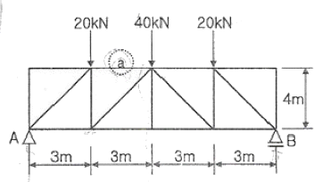
- 20kN(인장)
- 30kN(압축)
- 40kN(인장)
- 60kN(압축)
(정답률: 64%)
53. 그림에서 절점 D는 이동을 하지 않으며, A, B, C는 고정단일 때 C단의 모멘트는? (단, k는 강비임)
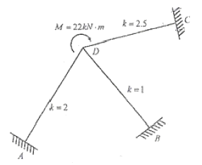
- 4.0 kNㆍm
- 4.5 kNㆍm
- 5.0 kNㆍm
- 5.5 kNㆍm
(정답률: 63%)
54. 그림과 같은 좌우대칭의 T형 단면의 도심(G)이 플랜지 하단과 일치하게 하려면 플랜지 폭 B의 크기는? (단위: cm)
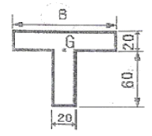
- 360 cm
- 180 cm
- 120 cm
- 60 cm
(정답률: 51%)
55. 한계상태 설계법에 따른 강구조 이음부에 대한 설계세칙 중 옳지 않은 것은?(오류 신고가 접수된 문제입니다. 반드시 정답과 해설을 확인하시기 바랍니다.)
- 응력을 전달하는 단속모살용접이음부의 길이는 모살사이즈의 10배 이상 또한 30mm 이상을 원칙으로 한다.
- 응력을 전달하는 겹침이음은 1열 이상의 모살용접을 원칙으로 한다.
- 고력볼트의 구멍중심간 거리는 공칭직경의 2.5배 이상으로 한다.
- 고력볼트의 구멍중심에서 볼트머리 또는 너트가 접하는 재의 연단까지의 최대거리는 판두께의 12배 이하 또한 150mm 이하로 한다.
(정답률: 31%)
56. 지진계에 기록된 진폭을 진원의 깊이와 진앙까지의 거리 등을 고려하여 지수로 나타낸 것으로 장소에 관계없는 절대적 개념의 지진크기를 말하는 것은?
- 규모
- 진도
- 진원시
- 지진동
(정답률: 64%)
57. 그림과 같은 모살용접의 유효길이는?
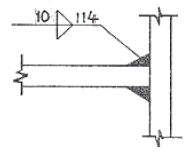
- 1.0 cm
- 9.4 cm
- 10.7 cm
- 11.4 cm
(정답률: 59%)
58. 강도설계법에서 철근콘크리트구조물의 공칭간도 산정 시 사용되는 강도감소계수로 옳지 않은 것은?
- 콘크리트의 지압력(포스트텐션 정착부나 스트럿-타이모델은 제외) : 0.65
- 압축지배 단면 중 나선철근으로 보강된 철근콘크리트부재 : 0.70
- 전단력과 비틀림모멘트 : 0.70
- 무근콘크리트의 휨모멘트. 압축력, 전단력, 지압력 : 0.55
(정답률: 47%)
59. 직경 2.2cm, 길이 50cm의 강봉에 측방향 인장력을 작용시켰더니 길이는 0.04cm 늘어났고 직경은 0.0006cm 줄었다. 이 재료의 포아송수는?
- 0.34
- 2.93
- 0.015
- 66.67
(정답률: 58%)
60. 철근 콘크리트 T형보의 유효폭 산정과 가장 관계가 먼 것은?
- 슬래브의 세장비
- 슬래브의 두께
- 양측 슬래브의 중심간의 거리
- 보의 경간
(정답률: 67%)
4과목: 건축설비
61. 에너지를 절약하기 위한 방법과 가장 관계가 먼 것은?
- 열관류율이 낮은 재료를 사용한다.
- 동일한 재료인 경우 두께가 두꺼운 것을 사용한다.
- 열전도율이 낮은 재료를 사용한다.
- 흡수성이 높은 재료를 사용한다.
(정답률: 54%)
62. 다음의 배선공사에 대한 설명 중 옳지 않은 것은?
- 합성수지관 공사는 옥내의 점검 불가능한 은폐장소에서는 사용할 수 없다.
- 금속관 공사는 옥내의 은폐장소 및 노출장소에 모두 사용이 가능하다.
- 금속관 공사는 외부적 응력에 대해 전선보호의 신뢰성이 높다.
- 플로어 덕트 공사에서 덕트 내부에는 절연전선을 사용한다.
(정답률: 53%)
63. 공기조화방식 중 팬코일 유닛 방식에 대한 설명으로 옳지 않은 것은?
- 덕트 방식에 비해 유닛의 위치 변경이 쉽다.
- 유닛을 창문 밑에 설치하면 콜드 드래프트를 줄일 수 있다.
- 전공기 방식으로 각 실에 수배관으로 인한 누수의 염려가 없다.
- 각 실의 유닛은 수동으로도 제어할 수 있고, 개별 제어가 쉽다.
(정답률: 67%)
64. 다음은 극장의 객석내에 설치하여야 하는 통로유도등과 관련된 기준 내용이다. ( )안에 알맞은 것은?
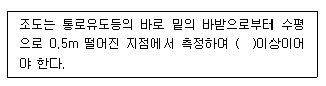
- 1 [lx]
- 2 [lx]
- 5 [lx]
- 10 [lx]
(정답률: 46%)
65. 지역난방 방식에 대한 설명 중 옳지 않은 것은?
- 시설이 대규모이므로 관리가 용이하고 열효율면에서 유리하다.
- 각 건물의 이용시간차를 이용하면 보일러의 용량을 줄일 수 있다.
- 설비의 고도화로 대기오염 등 공해를 방지할 수 있다.
- 고온수난방을 채용할 경우 감압장치가 필요하며 응축수트랩이나 환수관이 복잡해진다.
(정답률: 57%)
66. 배수용 배관재에 대한 설명 중 옳지 않은 것은?
- 경질염화비닐관은 내식성은 우수하나 충격에 약하다.
- 연관은 내식성이 작아 배수용 보다는 난방배관에 주로 사용된다.
- 동관은 전기 및 열전도율이 좋고 전성ㆍ연성이 풍부하여 가공도 용이하다.
- 주철관은 오배수관이나 지중 매설 배관에 사용된다.
(정답률: 55%)
67. 엘리베이터의 주요 기기의 설치 위치는 기계실, 승강로, 승장 등으로 나눌 수 있다. 다음 중 기계실에 설치하는 것은?
- 가이드 레일
- 완충기
- 균형추
- 권상기
(정답률: 66%)
68. 방열기의 표준방열량 산정에서 사용되는 표준상태의 열매의 온도는? (단, 열매는 증기)
- 80℃
- 94℃
- 100℃
- 102℃
(정답률: 47%)
69. 조명설비에서 불쾌 글레어(Discomfort glare)의 원인과 가장 거리가 먼 것은?
- 휘도가 낮은 광원
- 시선 부근에 노출된 광원
- 눈에 입사하는 광속의 과다
- 물체와 그 주위 사이의 고휘도 대비
(정답률: 69%)
70. 크로스 커넥션(cross connection)에 대한 설명으로 가장 알맞은 것은?
- 상수로부터의 급수계통(배관)과 그 외의 계통이 직접 접속되어 있는 것
- 관로내의 유체가 급격히 변화하여 압력변화를 일으키는 것
- 겨울철 난방을 하고 있는 실내에서, 창을 타고 차가운 공기가 하부로 내려오는 현상
- 급탕ㆍ반탕관의 순환거리를 각 계통에 있어서 거의 같게 하여 전 계통의 탕의 순환을 촉진하는 방식
(정답률: 60%)
71. 어떤 실의 취득열량이 현열 35000[W], 잠열 15000[W] 이었을 때 현열비는?
- 0.3
- 0.4
- 0.7
- 2.3
(정답률: 68%)
72. 배관의 신축이음쇠의 종류에 속하지 않은 것은?
- 밸로우즈형 신축이음쇠
- 스위블형 신축이음쇠
- 신축곡관
- 플랜지식 이음쇠
(정답률: 45%)
73. 전기설비가 어느 정도 유효하게 사용되는가를 나타내며, 다음과 같이 표현되는 것은?
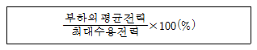
- 수용률
- 부등률
- 부하률
- 역률
(정답률: 66%)
74. 엘리베이터의 조작 방식 중 무운전원 방식으로 다음과 같은 특징을 갖는 것은?
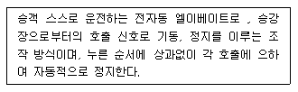
- 단식자동방식
- 카 스위치방식
- 승합전자동방식
- 시그널 콘트롤 방식
(정답률: 65%)
75. 통기관에 대한 설명 중 옳지 않은 것은?
- 사이폰 작용 및 배압에 의해서 트랩봉수가 파괴되는 것을 방지한다.
- 배수관 계통의 환기를 도모하여 관내를 청결하게 유지한다.
- 각개통기방식은 기능적으로 가장 우수하고 이상적이다
- 신정통기방식은 회로통기방식이라고도 하며, 통기수직관을 설치한 배수ㆍ통기계통에 이용된다.
(정답률: 57%)
76. 배수관의 관경과 구배에 대한 설명 중 옳지 않은 것은?
- 배수관경을 크게 하면 할수록 배수능력은 향상된다.
- 배관구배를 너무 급하게 하면 흐름이 빨라 고형물이 남는다.
- 배관구배를 완만하게 하면 세정력이 저하된다.
- 배수 수평관의 구배는 최소 1/200 이상으로 한다.
(정답률: 46%)
77. 어느 점광원에서 1[m] 떨어진 곳의 직각면 조도가 200[lx]일 때, 이 광원에서 2[m] 떨어진 곳의 조도는?
- 25 [lx]
- 50 [lx]
- 100 [lx]
- 200 [lx]
(정답률: 73%)
78. 스프링클러설비용 수조에 대한 설명 중 옳지 않은 것은?
- 수조의 내측에 수위계를 설치하여야 한다.
- 수조의 상단이 바닥보다 높은 때에는 수조의 외측에 고정식 사다리를 설치하여야 한다.
- 수조가 실내에 설치된 때에는 그 실내에 조명설비를 설치하여야 한다.
- 수조의 밑부분에는 청소용 배수밸브 또는 배수관을 설치하여야 한다.
(정답률: 56%)
79. 연면적 1500m2인 사무소 건물에서 필요한 1일 급수량은?
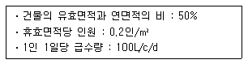
- 5m3
- 8m3
- 12m3
- 15m3
(정답률: 55%)
80. 어느 실에 필요한 램프의 개수를 구하고자 한다. 그 실의 바닥면적을 A, 평균조도를 E, 조명률을 U, 보수율을 M, 램프 1개의 광속(光束)을 F라고 할 때, 소요램프수의 적절한 산정식은?
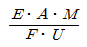
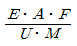
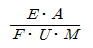
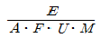
(정답률: 57%)
5과목: 건축법규
81. 다음 중 두께에 관계없이 방화구조에 해당되는 것은?
- 석고판 위에 시멘트모르타르를 바른 것
- 심벽에 흙으로 맞벽치기한 것
- 암면보온판 위에 석면시멘트판을 붙인 것
- 시멘트모르타르 위에 타일을 붙인 것
(정답률: 65%)
82. 도시관리계획결정에 따라 시설보호지구를 세분하여 지정할 경우, 지정할 수 있는 세분화된 시설보호지구에 해당하지 않는 것은?(오류 신고가 접수된 문제입니다. 반드시 정답과 해설을 확인하시기 바랍니다.)
- 학교시설보호지구
- 항만시설보호지구
- 공용시설보호지구
- 공원시설보호지구
(정답률: 30%)
83. 국토의 계획 이용에 관한 법률에 의한 기반시설 중 광장의 종류에 속하지 않는 것은?
- 교통광장
- 전시광장
- 지하광장
- 경관광장
(정답률: 50%)
84. 건축물의 건축허가를 신청하는 경우 에너지절약계획서를 제출하여야 하는 대상 건축물은?(관련 규정 개정전 문제로 여기서는 기존 정답인 1번을 누르면 정답 처리 됩니다. 자세한 내용은 해설을 참고하세요.)
- 운동시설 중 실내수영장으로서 당해 용도에 사용되는 바닥면적의 합계가 1,000m2인 건축물
- 교육연구시설 중 연구소로서 당해 용도에 사용되는 바닥면적의 합계가 2,000m2인 건축물
- 업무시설 중 사무소로서 당해 용도에 사용되는 바닥면적의 합계가 2,000m2인 건축물
- 종교시설로서 그 용도에 사용되는 바닥면적의 합계가 5,000m2인 건축물
(정답률: 64%)
85. 다음의 부설주차장의 설치와 관련된 기준 내용 중 밑줄 친 “대통령령이 정하는 규모” 에 해당하는 것은?
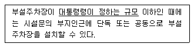
- 주차대수 100대의 규모
- 주차대수 200대의 규모
- 주차대수 300대의 규모
- 주차대수 400대의 규모
(정답률: 62%)
86. 그림과 같은 일반 건축물의 건축 면적은?
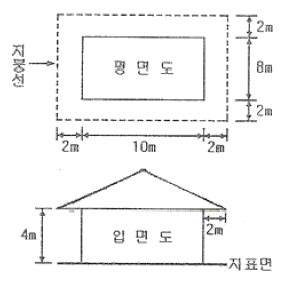
- 80m2
- 100m2
- 120m2
- 168m2
(정답률: 67%)
87. 건축허가 대상 건축물이라 하더라도 건축신고를 하면 건축허가를 받은 것으로 보는 경우에 속하지 않는 것은?
- 연면적의 합계가 100제곱미터 이하인 건축물의 건축
- 바닥면적의 합계가 85제곱미터 이내의 증축
- 바닥면적의 합계기 85제곱미터 이내의 재축
- 연면적이 250제곱미터 미만이고 4층 미만인 건축물의 대수선
(정답률: 55%)
88. 주거에 쓰이는 바닥면적의 합계가 200제곱미터인 주거용 건축물에 설치하는 음용수용 급수관의 최소지름은?
- 25 mm
- 32 mm
- 40 mm
- 50 mm
(정답률: 37%)
89. 건축물에 설치하는 지하층의 구조 밀 설비에 관한 기준 내용으로 옳지 않은 것은?
- 거실의 바닥면적이 50m2이상인 층에는 직통계단외에 피난층 또는 지상으로 통하는 비상탈출구 및 환기통을 설치할 것
- 바닥면적이 1,000m2 이상인 층에는 피난층 또는 지상으로 통하는 직통계단을 방화구획으로 구획되는 각 부분마다 1개소 이상 설치하되, 이를 피난계단 또는 특별 피난계단으로 할 것
- 거실의 바닥면적의 합계가 1,000m2이상인 층에는 환기설비를 설치할 것
- 지하층의 바닥면적이 200m2이상인 층에는 식수공급을 위한 급수전을 1개소 이상 설치할 것
(정답률: 48%)
90. 다음 중 용도별 건축물의 종류가 잘못 연결된 것은?
- 공관 - 단독주택
- 기숙사 - 공동주택
- 바닥면적이 500m2인 보건소 - 제1종 근린생활시설
- 바닥면적이 500m2인 교회 - 제2종 근린생활시설
(정답률: 50%)
91. 6층 이상으로서 연면적 2,000m2이상인 다음 건축물 중 승용승강기를 가장 많이 설치해야 하는 것은? (단, 8인승 승용승강기인 경우)
- 문화 및 집회시설 중 집회장
- 교육연구 및 복지시설
- 업무시설
- 위락시설
(정답률: 62%)
92. 다음의 건축선에 따른 건축제한과 관련된 기준 내용 중 ( )안에 알맞은 것은?
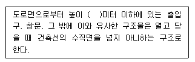
- 1.5
- 3
- 4.5
- 6.
(정답률: 61%)
93. 도시관리계획결정의 고시가 있을때 지적이 표시된 지형도에 도시관리계획사항을 명시한 도면을 작성하여야 하는데, 이 도면의 축척 기준은?
- 축척 3천분의 1 내지 5천분의 1
- 축척 1천500분의 1 내지 3천분의 1
- 축척 500분의 1 내지 1천500분의 1
- 축척 250분의 1 내지 500분의 1
(정답률: 42%)
94. 다음 중 건축에 속하지 않는 것은?
- 대수선
- 이전
- 증축
- 개축
(정답률: 64%)
95. 노상주차장의 구조ㆍ설비기준 내용으로 옳지 않은 것은?
- 주간선도로에 원칙상 설치하여서는 아니된다.
- 너비 6m 미만의 도로에 원칙상 설치하여서는 아니된다.
- 종단경사도가 3%를 초과하는 도로에 원칙상 설치하여서는 아니된다.
- 주차대수 규모가 20대 이상인 경우에는 장애인전용주차구획을 1면 이상 설치하여야 한다.
(정답률: 46%)
96. 다음 그림과 같은 대지에 건축물을 건축하고자 한다. 층수는 지하는 1층(200m2), 지상은 5층으로 하고자 할 경우 최대한 건축할 수 있는 연면적은? (단, 건폐율은 50%, 용적률은 200% 이다.)
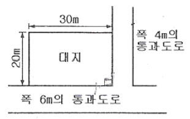
- 1196m2
- 1200m2
- 1396m2
- 1695m2
(정답률: 39%)
97. 건축물의 연면적 중 주차장으로 사용되는 부분의 비율이 70퍼센트인 경우 주차전용건축물로 볼 수 없는 것은?
- 주차장 외의 용도로 사용되는 부분이 종교시설인 경우
- 주차장 외의 용도로 사용되는 부분이 의료시설인 경우
- 주차장 외의 용도로 사용되는 부분이 운동시설인 경우
- 주차장 외의 용도로 사용되는 부분이 업무시설인 경우
(정답률: 58%)
98. 공개 공지 또는 공개 공간의 확보 대상 지역에 속하지 않는 것은?
- 상업지역
- 준공업지역
- 일반주거지역
- 전용주거지역
(정답률: 61%)
99. 건축물관련 건축기준의 허용오차가 옳지 않은 것은?
- 출구 너비 : 2% 이내
- 바닥판 두께 : 3% 이내
- 건축물 높이 : 3% 이내
- 벽체 두께 : 3% 이내
(정답률: 52%)
100. 주차장의 주차단위구획의 최소 면적은? (단, 평행주차형식 외의 경우이며, 일반형)(오류 신고가 접수된 문제입니다. 반드시 정답과 해설을 확인하시기 바랍니다.)
- 10m2
- 11.5m2
- 12m2
- 16.5m2
(정답률: 44%)